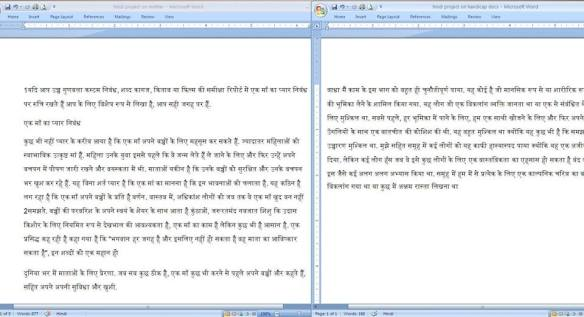

क्या आप बता सकते हैं कि नीचे लिखे हुए शब्दों/वाक्यों का अर्थ क्या है?
“बाधा मैं काम के इस भाग को बहुत ही चुनौतीपूर्ण पाया. यह कोई है जो मानसिक रूप से या शारीरिक रूप से विकलांग था की भूमिका लेने के शामिल किया गया। यह लोग जो एक विकलांग व्यक्ति जानता था या एक से संबंधित थे जो खासकर के लिए मुश्किल था. सबसे पहले,हर भूमिका में पाने के लिए, हम एक साथी खोजने के लिए और फिर अपने मुंह में चार उँगलियों के साथ एक बातचीत की कोशिश की थी। यह बहुत मुश्किल था क्योंकि यह कुछ भी है कि समझा जा सकता उच्चारण मुश्किल था”।.

नहीं ना!
यह सिकन्दराबाद की एक प्रख्यात स्कूल से बच्चों को दिए गये प्रोजेक्ट का एक पैरा है। बच्चों को तीन विषय दिए गये थे माँ, विकलांग, और भारतीय पर्वतारोही! बच्चों ने लेख लिखने का आसान तरीका निकाला विकिपीडिया से उनके अंग्रेजी लेख खोजे और उन्हें गूगल ट्रांसलेटर की सहायता से हिन्दी में बदल कर स्कूल में जमा करवा दिया और प्रसन्नता की बात यह है कि बच्चों का यह प्रोजेक्ट पास हो गया। ना लिखने वाले ने पढ़ा, ना जाँचने वाले ने!
कुछ दिनों पहले बच्चे पेन ड्राईव में यह लेख लेकर प्रिंट करवाने के लिए आए थे, मैने उन्हें बताया कि यह लेख गलत है, एक भी वाक्य सही नहीं है तो उनका कहना था , छोड़िए अंकल… लाईट लीजिए!मेरे पास लाईट लेने के अलावा कोई रास्ता न था
देखिए दो लेखों के स्क्रीन शॉट।
Facebook Post of November 23, 2013